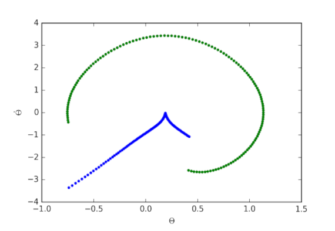

“””I am a robotics and machine learning enthusiast. I have done research on control of surgical robotic
arm and underactuated bipedal walking.
I have used machine learning for information extraction from documents, tables, images and line diagrams;
NLP prblems; object detection; and to solve other similar problems.
I am intereseted in solving complex robotics or automation problems using ML, AI, optimization, planning,
optimal control, kinematics and dynamics.
I have a zeal for problem solving, research, ML and robotics and want to utilize it to contribute to the
world.”””
History
Utopia Global, Bengaluru, India
- Information extraction from scanned documents with tables, line diagrams, forms etc.
- Custom named entity recognition, tokenization, category matching in unstructured text.
A brief review of dynamics and control of underactuated biped robots
Advanced Robotics, 2017
Design optimization of minimally invasive surgical robot
Applied Soft Computing, 2015
Kinematic control of an articulated minimally invasive surgical robotic arm
IEEE ICPEICES, 2016

Gait stabilisation of an underactuated bipedal walker on steep slopes
International Journal of Intelligent Engineering Informatics, 2022
Split compound words
Algorithm design
Manipulator arm kinemtics
Motion planning
Contact Me
If you want to collaborate with me on some research ideas/ have work for me/
would like to discuss my work or just found my profile interesting,
please feel free to contact me.